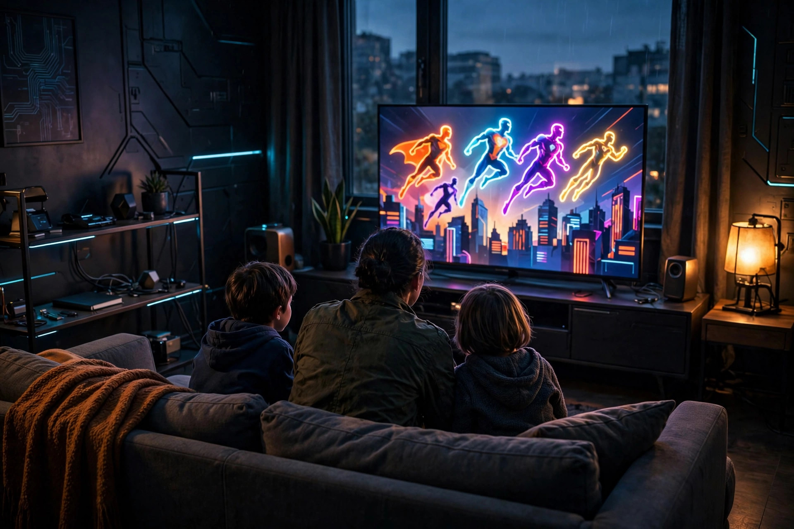

Marvel shows to watch with kids: a ratings-first family guide

“It's on Disney+, so it's fine for the kids” is the most common — and most unreliable — rule in family Marvel viewing. The same service that carries a cartoon made for preschoolers also carries series rated TV-MA, and the same franchise label sits on a three-minute cartoon short and on an animated series its own rating describes as unsuitable for under-14s. Ratings, not logos, are the sorting tool that works. This guide sorts the Marvel series families actually ask about by their published rating bands, flags where the ratings themselves have shifted or vary by episode, gives an age-band framework for choosing, and names the titles on the same service that are not for children at all. One standing caution applies to everything below: ratings differ by country and sometimes by episode, so treat every rating here as a starting point and confirm it on the title page before pressing play.
Start with the rating, not the logo
The rating bands in play span the full range of American television guidance. At the gentlest end, TV-Y7 marks programming aimed at children seven and older. TV-PG signals material parents may find unsuitable for younger children and may want to watch alongside them — the TV Parental Guidelines description quoted by ComicBook mentions, among the possibilities at this level, moderate violence and infrequent coarse language. TV-14 is the band Disney+'s own help guidance, as quoted by The Escapist, describes as containing material many parents would find unsuitable for children under 14. And TV-MA is adults-only territory that nonetheless sits inside the same app, a few rows away from the cartoons. A family that learns to read those four labels can navigate the whole catalogue; a family that navigates by franchise, character, or animation style will eventually be surprised, because none of those three things predicts the rating.
The second lesson is that a show's rating is not always a single stable fact. Ms. Marvel was widely reported before release as the first Marvel Studios series rated TV-PG; CBR later reported that a Disney+ listing showed the series as TV-14 after all, with the reason for the adjustment unclear. WandaVision varies inside a single season: ComicBook's rating coverage notes its earliest, sitcom-styled episodes were TV-PG before the series shifted to TV-14. Neither case is a scandal — both are reminders that the rating on the actual title page, in the actual country, on the day of viewing, outranks any list, including this one.
The family shelf, sorted by rating band
| Series | Published rating | Format | Best for |
|---|---|---|---|
| Spidey and His Amazing Friends | TV-Y7 | Animated series for young children | The youngest viewers; the catalogue's entry point |
| I Am Groot | TV-PG | Season 1: five shorts of about 3–4 minutes | Very short sessions; almost no continuity homework |
| Your Friendly Neighborhood Spider-Man | TV-Y7-FV | Animated season 1, premiered January 29, 2025 | Ages 7+; a self-contained, alternate-timeline origin story |
| Ms. Marvel | Reported TV-PG, later listed TV-14 | Live-action teen hero series | Older children and tweens, watched together |
| Hawkeye | TV-14 band (live-action Marvel Studios norm) | Live-action holiday action series | Older children, per published family-review verdict |
| WandaVision | TV-PG early episodes, TV-14 later | Nine episodes | Older children who can handle grief themes and a tonal shift |
| What If...? | TV-14 | Animated anthology | Teens; described as aimed at more mature viewers |
| X-Men '97 | TV-14 | Animated season 1: 10 episodes, March 20 – May 15, 2024 | Teens; not the TV-Y7 cartoon its predecessor was |
The youngest band is genuinely well served. The Escapist's ratings explainer places Spidey and His Amazing Friends at TV-Y7, and parents-guide coverage of Your Friendly Neighborhood Spider-Man gives it TV-Y7-FV — the FV flag denoting fantasy violence — suitable for ages seven and older, with season 1 premiering on January 29, 2025 as an alternate-timeline story in which Norman Osborn, rather than Tony Stark, mentors Peter Parker. That alternate-timeline design is a family feature, not a footnote: nothing else needs watching first. Between those two sits I Am Groot at TV-PG, which MensXP's review describes as five animated shorts of roughly three to four minutes each in its first season, about twenty minutes in total, targeted mainly at kids and requiring no continuity knowledge — the lowest-risk first Marvel experience on the service, and the easiest to stop mid-way.
The middle band is where co-watching earns its keep. Ms. Marvel is a warm teen-led series, but its rating history — TV-PG in pre-release reporting, TV-14 in a later listing reported by CBR — is exactly why a parent should glance at the title page rather than rely on memory. Hawkeye carries a published family verdict that makes the judgement concrete: Movieguide's review of its opening episodes rated it worth watching for older children and adults, praising its family themes while warning that brief profanity, significant violence, jeopardy, and scary villains call for discernment with younger viewers. WandaVision adds a different caution: its nine episodes begin in gentle sitcom territory and shift register as the season proceeds, matching its mixed TV-PG and TV-14 episode ratings, so a child comfortable with episode one has not necessarily been cleared for episode eight.
The teen band contains the guide's most important trap. X-Men '97 looks, sounds, and markets like the Saturday-morning cartoon many parents grew up with, and it is a direct continuation of that series — but where the 1990s original carries a TV-Y7 rating, The Escapist documents the revival at TV-14, with Disney+'s guidance describing such material as unsuitable for many under-14s. Its first season runs ten episodes, released from March 20 to May 15, 2024, and it belongs with teenagers, not with the nostalgia-driven assumption that a familiar cartoon is a children's cartoon. What If...?, likewise TV-14 and described in the same explainer as aimed at more mature viewers, rewards film knowledge and tolerates darker outcomes than its animated style suggests.
Pick by age band: a decision framework
Under 7: stay with Spidey and His Amazing Friends and sampled I Am Groot shorts; session length is the controlling factor, and both can be stopped cleanly. Ages 7 to 9: Your Friendly Neighborhood Spider-Man is the step up — a TV-Y7-FV rating, a self-contained story, and action that stays inside the fantasy-violence flag on its rating. Ages 10 to 12: Ms. Marvel watched together, with the title-page rating checked first, and Hawkeye for children already comfortable with live-action film-level action, following the older-children verdict in its published family review. Teens: the TV-14 shelf opens — WandaVision, What If...?, and X-Men '97 — with the caveat that TV-14 is a band, not a uniform intensity, and individual children differ. At every band, the child's reaction to the previous step matters more than the birthday arithmetic; the framework orders the shelf, it does not overrule the viewer in the room.
Preview first: a short procedure for parents
- Check the rating on the title page, in the app, on the day. The Ms. Marvel TV-PG-to-TV-14 history is the worked example of why memory and articles — this one included — are not the final source.
- Watch the first episode's action peak before the child does, or watch episode one together. Success looks like: no content in that episode would have required a pause-and-explain the child is not ready for.
- Use the service's parental controls for the TV-MA shelf. General best-of lists note that Disney+ added parental controls precisely because mature series joined the catalogue; set them before a child browses unsupervised, not after a surprise.
- Re-check at season boundaries. A series that changes register mid-run, as WandaVision does, deserves a fresh look rather than a blanket pass earned by its gentlest episodes.
The not-for-kids list on the same service
Completeness matters here, because children browse by character recognition. CBR's rating coverage notes that the former Netflix Marvel series that moved to Disney+ — Daredevil, Jessica Jones, Luke Cage, Iron Fist, The Defenders, and The Punisher — were all rated TV-MA. Animation is no guarantee either: reporting sourced to Variety identifies Marvel Zombies, which premiered September 24, 2025 as a four-episode miniseries, as Marvel animation's first TV-MA series. Digital Trends' best-shows list makes the same point from the recommendation side, describing the former Netflix titles as about as close to R-rated content as the MCU gets and crediting their arrival for the service's parental controls. None of this argues those series are bad — several are excellent for adults — but a family guide that omits them leaves the most dangerous assumption unchallenged: that everything under the logo in the children's app is children's programming.
Frequently asked questions
What is the best first Marvel show for a young child? Spidey and His Amazing Friends (TV-Y7) for series viewing, and I Am Groot shorts for the shortest, lowest-commitment introduction. Is Ms. Marvel suitable for kids? It was reported as TV-PG before release and later listed as TV-14, so check the title page; either way it is a teen-led series best watched together with older children. Is X-Men '97 a kids' show? No — it is rated TV-14, unlike its TV-Y7 predecessor, and belongs with teens. Are all Marvel shows on Disney+ family-friendly? No: the service carries TV-MA series in both live action and animation, which is why this guide sorts by rating rather than by brand.
Sources, accessed October 16, 2026: The Escapist, “What Age Rating Is X-Men '97?”; ComicBook, “Ms. Marvel's TV Rating Revealed”; CBR, “Ms. Marvel Loses Its Younger Audience-Friendly Rating”; AgeRatingJuju, Your Friendly Neighborhood Spider-Man parents guide; MensXP, I Am Groot review; Movieguide, Hawkeye episodes 1–2 review; Comic Book Co, Marvel Zombies TV-MA report; Digital Trends, best MCU shows on Disney+; Wikipedia, X-Men '97 season 1 episode listing. Ratings are as published by those sources and vary by region and episode; confirm on Disney+ before viewing. This is an unofficial fan guide and is not affiliated with Marvel or Disney.